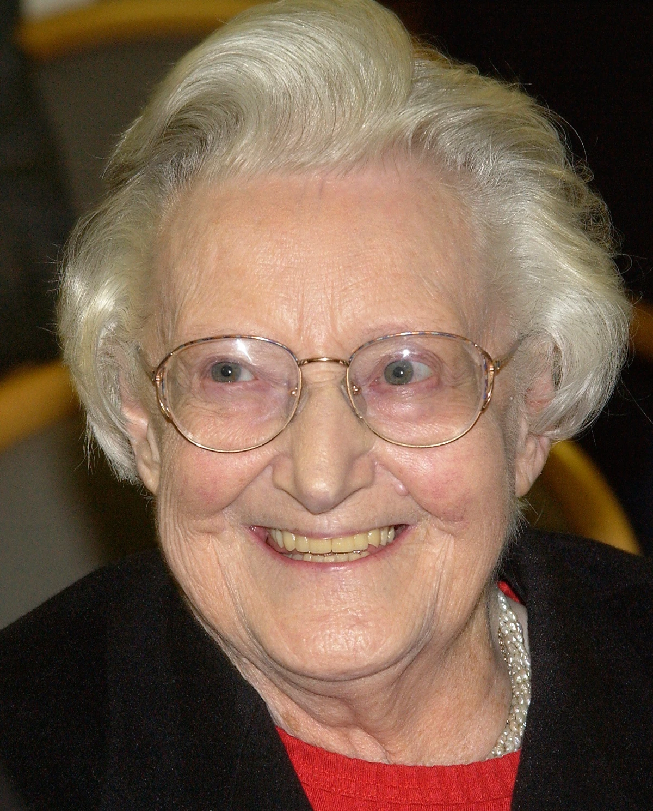
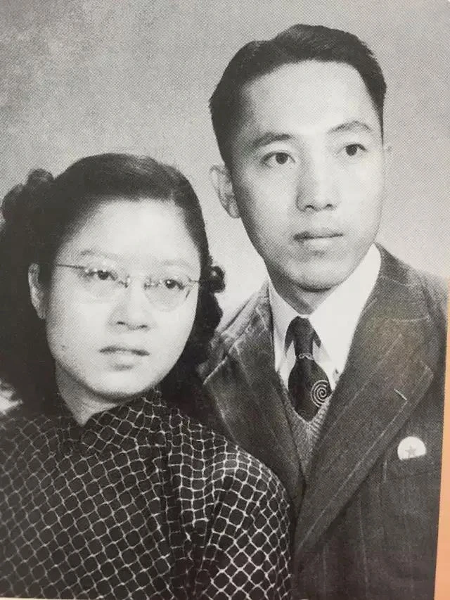
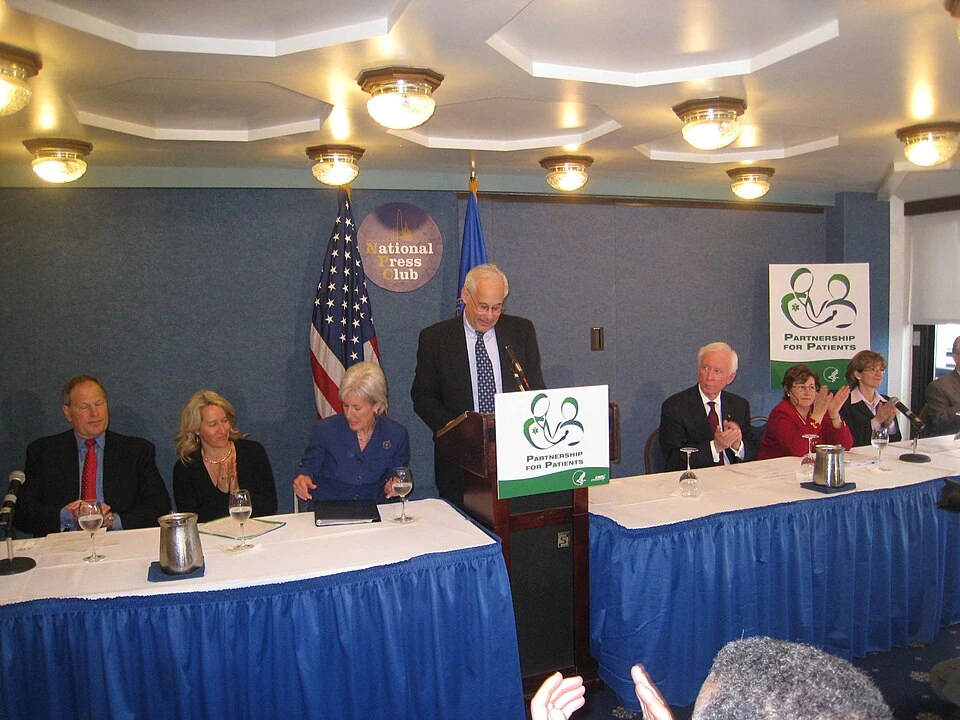

PHOTO SOURCES
每条道路，都有真实的人
人物照片与插画分别展示。这里记录摄影与档案来源、素材许可，以及网页使用的像素尺寸。历史照片按可取得的画质保留。

Cicely Saunders 西西莉·桑德斯
Cicely Saunders (4x5 cropped).jpg
摄影 / 档案：Unknown author Unknown author
许可 / 权利信息：CC BY-SA 4.0
下载图：1582 × 1960像素。网页展示副本压缩为WebP；下载图保留，不放大像素。



Peter Safar 彼得·萨法
Portrait of Peter Safar standing in a white lab coat
摄影 / 档案：University of Pittsburgh, Health Sciences Library System
许可 / 权利信息：档案馆照片；版权状态以来源机构说明为准
下载图：2568 × 3900像素。网页展示副本压缩为WebP；下载图保留，不放大像素。

Rita Charon 丽塔·卡伦
丽塔·卡伦（右）与Satendra Singh合影。
摄影 / 档案：Dr Satendra
许可 / 权利信息：CC BY-SA 4.0
下载图：1280 × 720像素。网页展示副本压缩为WebP；下载图保留，不放大像素。


Barry Marshall 巴里·马歇尔
Barry J Marshall.jpg
摄影 / 档案：WikiEdtingProfile2021
许可 / 权利信息：CC BY-SA 4.0
下载图：960 × 1104像素。网页展示副本压缩为WebP；下载图保留，不放大像素。



Willem Kolff 威廉·科尔夫
Willem Johan Kolff working on an experimental artificial heart machine
摄影 / 档案：J. Willard Marriott Library, University of Utah; Willem J. Kolff photograph collection
许可 / 权利信息：大学图书馆档案；版权状态以来源机构说明为准
下载图：2464 × 2241像素。网页展示副本压缩为WebP；下载图保留，不放大像素。

Atul Gawande 阿图·葛文德
Atul-Gawande (cropped).jpg
摄影 / 档案：Amar Karodkar；原图裁剪：Animalparty
许可 / 权利信息：CC BY-SA 4.0
下载图：806 × 1211像素。网页副本等比例缩小为640 × 962像素并转换为WebP，未进一步裁切。照片及转换副本按CC BY-SA 4.0共享。

Peter Piot 彼得·皮奥特
2006年，皮奥特（左）与印度总理辛格会面。
摄影 / 档案：Prime Minister's Office
许可 / 权利信息：GODL-India
下载图：960 × 631像素。网页展示副本压缩为WebP；下载图保留，不放大像素。


Karl Deisseroth 卡尔·戴瑟罗斯
Karl Deisseroth in 2025.jpg
摄影 / 档案：Christopher P. Michel（Cmichel67）
许可 / 权利信息：CC BY-SA 4.0
下载图：3284 × 4600像素。网页副本等比例缩小为640 × 896像素并转换为WebP，文件未裁切；版面按原照片窗口显示。照片及转换副本按CC BY-SA 4.0共享。